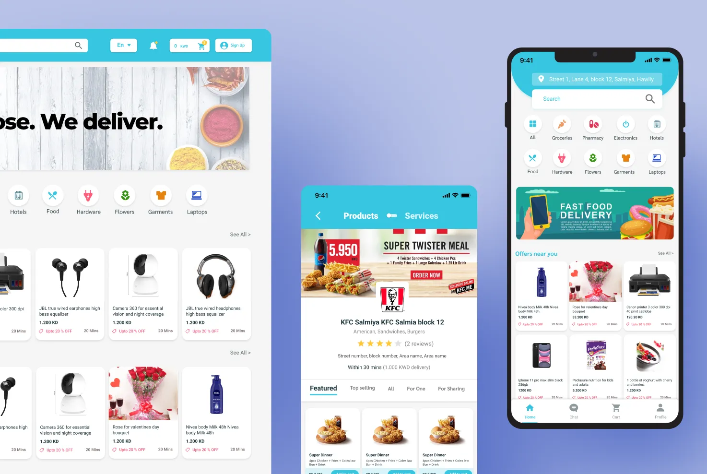
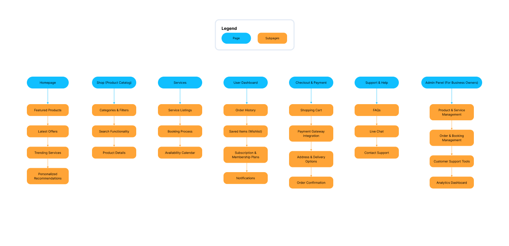
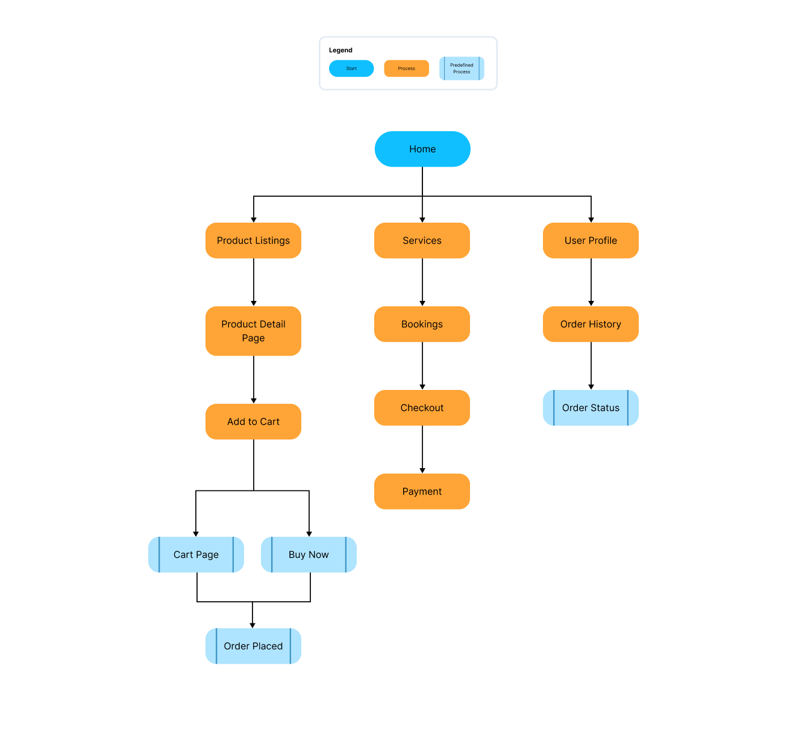
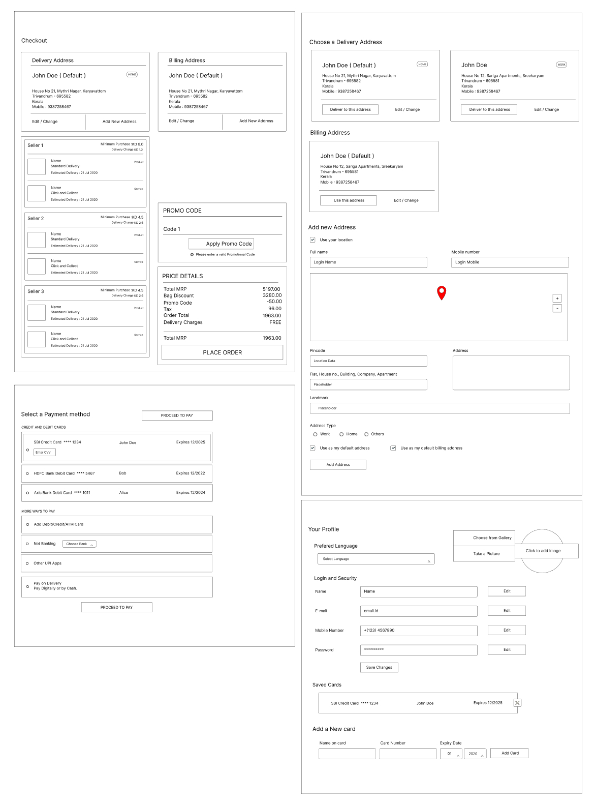
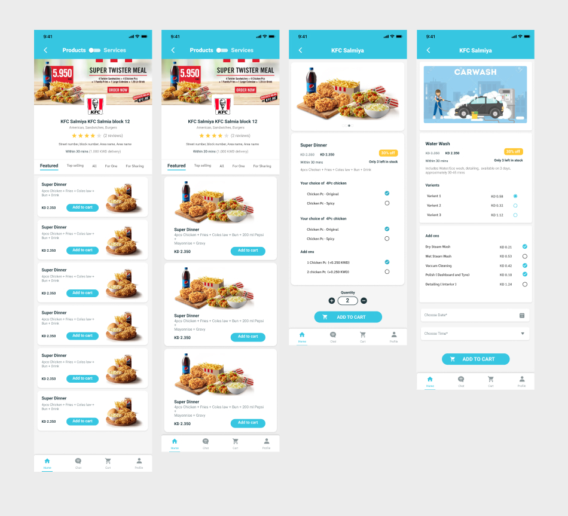
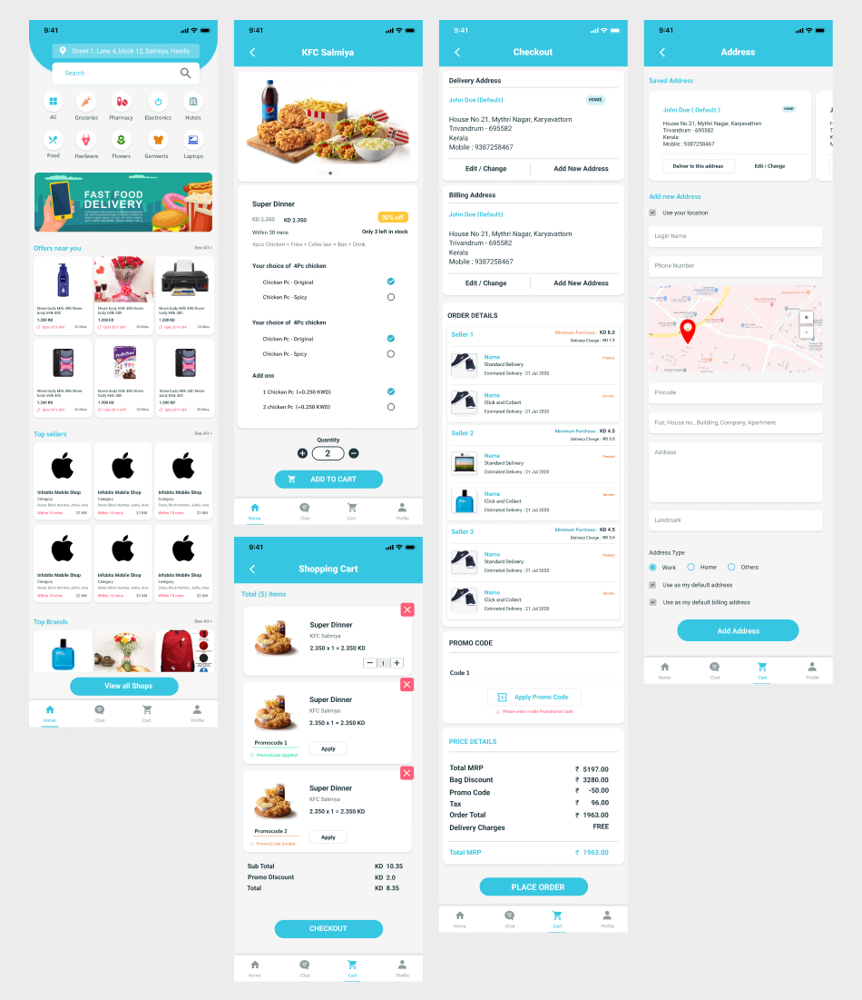
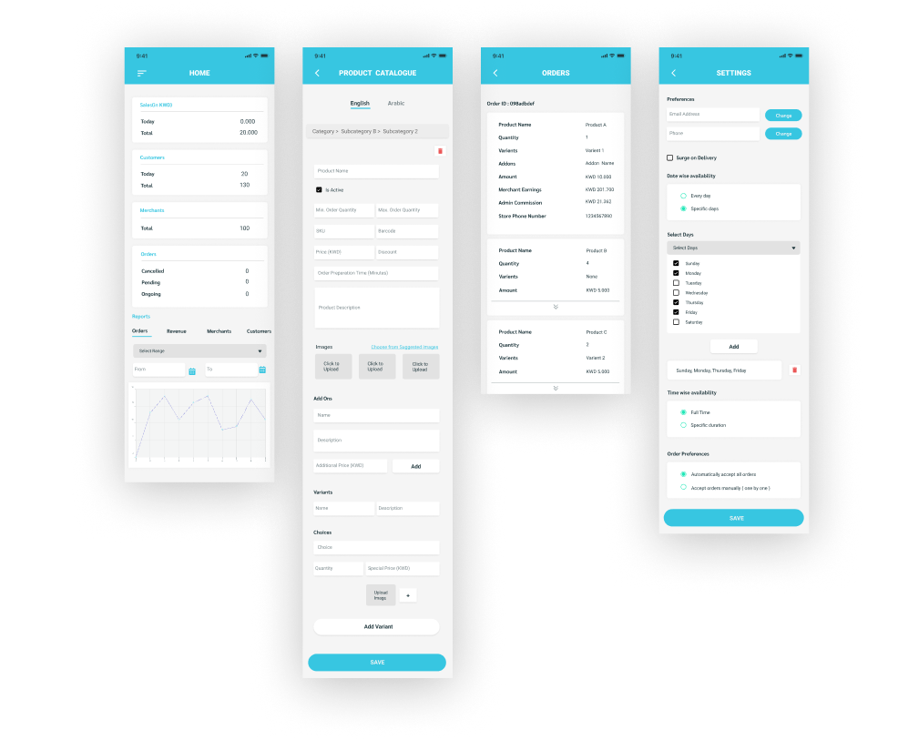
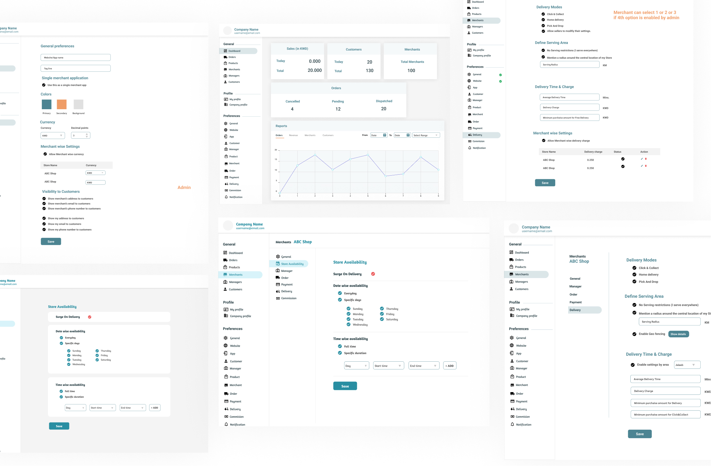
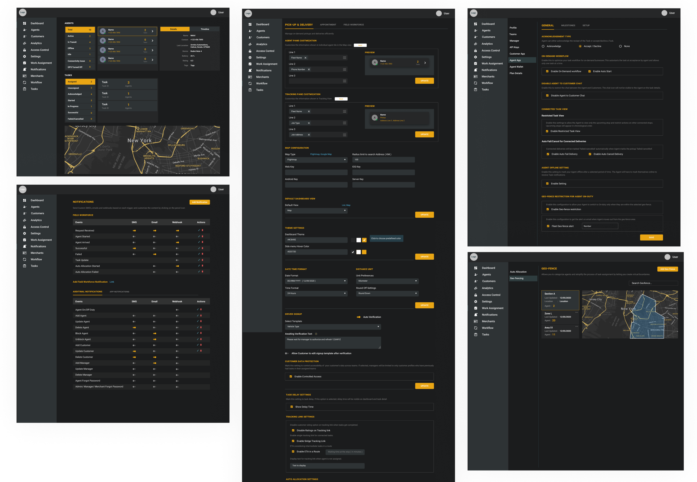

A unified e-commerce and service platform with customer, store management, and delivery apps. +35% purchases, 70% mobile traffic.

Overview
Cocopalms needed a single platform to handle product sales and service bookings: hotels, food, hardware, flowers, garments, and laptops. The complexity required separate but interconnected apps: a main website, a customer app, a store management app, and a real-time delivery app.
Project goals
UX Research & Insights
During requirements discussions, we agreed to design with scalability to accommodate future features. The complex nature of Cocopalms, spanning e-commerce and service-based interactions, required special attention to ensure providers could modify offerings seamlessly.
Frequent sessions with the development team and project manager refined the strategy. Key discussion points included:
Competitive Analysis
The competitive analysis focused on understanding industry standards and identifying gaps that Cocopalms could fill.
User experience (UX)
Navigation, responsiveness, and ease of use across all device sizes.
Visual design
Brand consistency, imagery, and overall aesthetics.
Features & functionality
Integration of product and service offerings, reservation systems, and user accounts.
SEO strategies
Keyword optimisation, meta tags, and page load speeds.
User Research
To align the platform with user needs, I distributed online questionnaires and conducted in-depth interviews targeting potential users.
Age group
25–45 years
Tech-savvy individuals
Regular users of online shopping and service platforms
Persona 1
The Busy Professional
Age 28–38. Works full time, shops primarily on mobile during commutes and lunch breaks. Expects speed and one-tap reordering.
Goals
Frustrations
Persona 2
The Service Seeker
Age 30–45. Regularly books household and lifestyle services. Values reliability and transparent pricing over discounts.
Goals
Frustrations
UX Design Process
After analysing user needs and business goals, I designed an intuitive navigation structure that seamlessly integrates shopping and service booking. The sitemap spans 7 key areas: Homepage, Shop, Services, User Dashboard, Checkout, Support, and Admin Panel.


Checkout, address management, payment selection, and user profile screens were wireframed to ensure a smooth transaction flow on mobile.

The customer-facing app uses a teal and white palette with prominent product imagery. Products and services sit side-by-side, with real-time delivery tracking built in.


Designed for store owners, covering product catalogue management, order dashboard, availability settings, and delivery configuration. Real-time stock updates keep listings accurate.

A multi-merchant admin panel allowing the platform operator to manage merchants, delivery zones, commission, and notifications across all stores.

A dark-themed operations dashboard for delivery agents, with live map view, task assignment, geo-fencing, and agent analytics.

Development & Testing
We followed an agile methodology with iterative testing. A limited beta audience gave real-world feedback before full launch. Key improvements included adding visual hierarchy to distinguish Products from Services, and introducing a progress bar in the checkout flow.
Results
Cocopalms launched to strong commercial results. A 35% increase in purchases driven by an intuitive design that removed friction from both the shopping and booking flows. The mobile-first approach proved essential: 70% of all traffic came from mobile devices, validating the design strategy from day one.
What made this project particularly challenging, and ultimately rewarding, was the scope: four connected surfaces, each with distinct users and workflows, all sharing a single design system. Keeping the experience consistent across a customer app, store management interface, admin panel, and delivery operations tool required deep systems thinking and constant cross-team collaboration.
Key takeaways